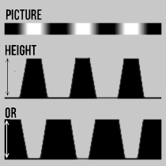
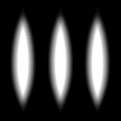
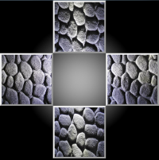
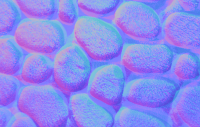

Height map

This texture contains the distance "height" from "floor".
The brighter the pixel, the further away (more depth).
In this application it doesn't matter if the values are inverted because you can change it anytime later on.
The most important thing though, is the value difference between the pixels.
Ideal is a texture with pixel dimensions with a power of 2 (2, 4, 8,..., 256, 512 etc.)
If using a height map as a displacement map,
you can easily see the effects on the surface.
An example heightmap (left), bumps going in (top-right)
and bumps going out (bottom-right) are shown in the image below.

NormalMaps from photos
To generate normal maps from photos, you need four specific pictures of the same surface. Each picture needs a different lighting position.
The light should shine from the top, left, right and bottom of the image.
For this you need a simple camera, a flashlight and optionally a tripod.
If you don't use a tripod you probably have to align and crop the pictures before using them.

Drag&drop the pictures on the four positions inside the left viewport.
You can also click on each image to select a file.
Keep in mind that the light origin, shown inside the viewport, is in the center!
Also, all of the four pictures must have the same resolution.


As a result a pretty decent normalmap is generated from the pictures (of my bath rug...).
Readjust the values afterwards for better results.
Attention:
Best try capturing the surface with a tripod and don't forget to capture an additional image for the diffuse map!